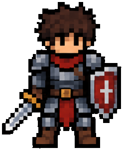
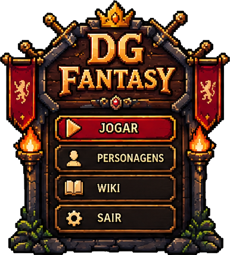

Guerreiro

Mova com
W A S D
— o ataque é automático
PERSONAGENS
← Voltar ao menu
WIKI
Personagens
Monstros
Itens
Habilidades
← Voltar ao menu
VIDA
100 / 100
XP
0 / 10
NÍVEL
1
WAVE 1
⏱
00:00
💀
0
CHEFE
NÍVEL
2
!
Escolha uma melhoria
VOCÊ FOI DERROTADO
Wave alcançada:
1
Nível alcançado:
1
Monstros derrotados:
0
Tempo de sobrevivência:
00:00
Jogar novamente
Voltar ao menu
🔊